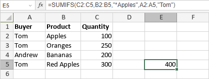

SUMIFS Funkcija
SUMIFS funkcija je jedna od funkcija za matematiku i trigonometriju. Koristi se za sabiranje svih brojeva u odabranom opsegu ćelija na osnovu više kriterijuma i vraća rezultat.
Sintaksa
SUMIFS(sum_range, criteria_range1, criteria1, [criteria_range2, criteria2], ...)
SUMIFS funkcija ima sledeće argumente:
| Argument | Opis |
|---|---|
| sum_range | Opseg ćelija koje će biti sabrane. |
| criteria_range1 | Prvi odabrani opseg ćelija na koji se primenjuje criteria1. |
| criteria1 | Prvi uslov koji mora biti zadovoljen. Primenjuje se na criteria_range1 i određuje koje ćelije u sum_range će biti sabrane. Može biti vrednost uneta ručno ili referencirana iz druge ćelije. |
| criteria_range2, criteria2, ... | Dodatni opsezi ćelija i odgovarajući kriterijumi. Ovi argumenti su opciona. |
Napomene
Prilikom definisanja kriterijuma možete koristiti džoker karaktere. Upitnik "?" može zameniti bilo koji pojedinačni karakter, a zvezdica "*" može zameniti bilo koji broj karaktera.
Kako primeniti SUMIFS funkciju.
Primeri
Slika ispod prikazuje rezultat koji vraća SUMIFS funkcija.
